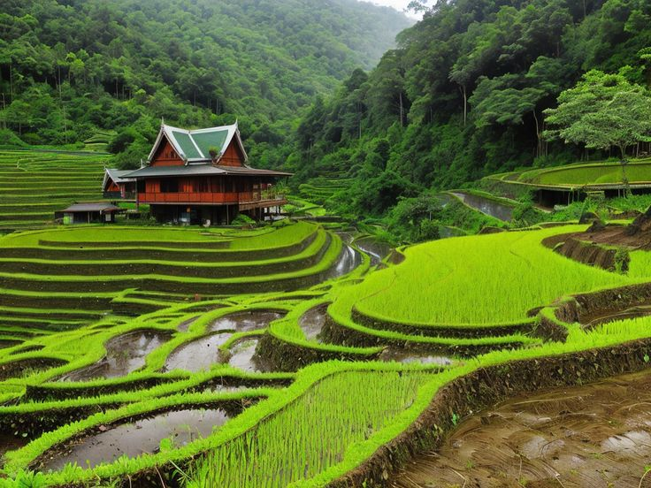
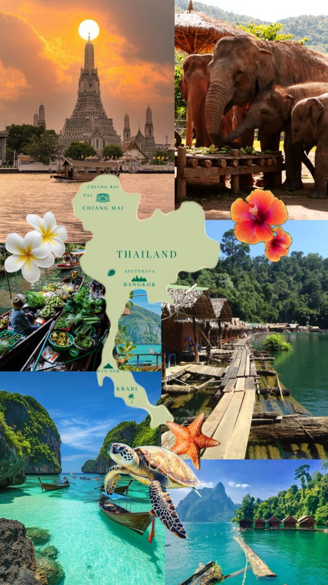
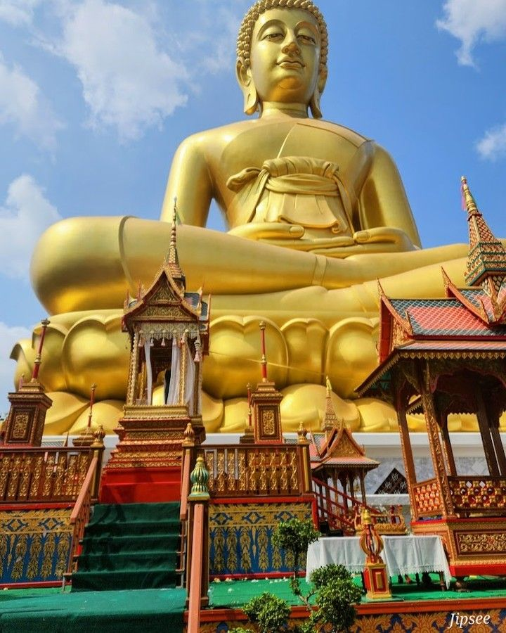

Thaïlande – Le Royaume du Sourire
Découvrez la richesse de la Thaïlande, des temples sacrés de Bangkok aux plages paradisiaques de Phuket
Sawasdee kha/krap, bienvenue au cœur du Royaume du Sourire !
La Thaïlande est un véritable carrefour entre spiritualité, nature luxuriante et traditions vivantes.
Des temples scintillants de Bangkok aux rizières du Nord, des marchés flottants aux plages idylliques du Sud, chaque région offre une immersion unique dans un univers fascinant.
Que vous soyez passionné de culture, d’aventure ou de détente, la Thaïlande vous invite à vivre des instants inoubliables dans un décor d’une beauté naturelle et d’une richesse culturelle fascinante.

| Région | Saison Idéale | Température | Spécialité Culinaire | Budget Moyen/Jour |
|---|---|---|---|---|
| Bangkok & Centre | Nov–Fév | 25–32°C | Pad Thaï, Tom Yum | 40–80€ |
| Nord (Chiang Mai) | Nov–Fév | 18–28°C | Khao Soi, Sai Ua | 30–70€ |
| Sud (Phuket, Krabi) | Déc–Avr | 27–35°C | Curry Massaman, Fruits Tropicaux | 50–90€ |
| Nord-Est (Isan) | Nov–Mars | 20–30°C | Som Tam, Larb | 25–60€ |
| Îles (Koh Samui…) | Jan–Août | 26–33°C | Fruits de mer, Curry rouge | 60–100€ |
Trésors de Thaïlande
- 🏯 Grand Palais – Bangkok
Ancienne résidence royale, chef-d'œuvre architectural et centre spirituel de la nation. - 🔶 Temple du Bouddha d’Émeraude – Bangkok
Temple sacré le plus vénéré de Thaïlande, situé au cœur du Grand Palais. - 🦣 Parc National de Khao Yai
Réserve naturelle classée à l’UNESCO, idéale pour les randonnées et l’observation des éléphants. - 🌾 Rizières en terrasse – Chiang Mai
Paysages apaisants et emblématiques du nord thaïlandais, entre nature et traditions. - 🏝️ Îles Phi Phi – Sud de la Thaïlande
Plages turquoise et falaises spectaculaires, spot de rêve pour le snorkeling et la détente. - 🛕 Wat Phra That Doi Suthep – Chiang Mai
Temple perché sur les hauteurs, offrant une vue panoramique et un lieu de méditation paisible.
Contactez Nos Experts Thaïlande
La Thaïlande en Images


